Exemplo 2.7.2. Observe a seguinte identidade
 ,
,  ,
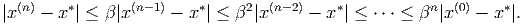, 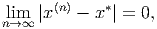 e 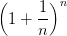. Observe que quando 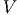 se aproxima
do 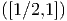 de máquina a expressão perde o significado. Veja a Figura 2.1 com o
gráfico de em escala logarítmica.
,
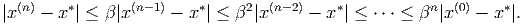, 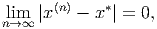 e 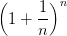. Observe que quando 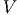 se aproxima
do 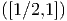 de máquina a expressão perde o significado. Veja a Figura 2.1 com o
gráfico de em escala logarítmica.
Exemplo 2.7.1. Considere o seguinte processo iterativo:
e itere algumas vezes a linha de comando:
Para compreender o que acontece, devemos levar em consideração que o número 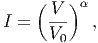 possui um representação infinita tanto na base decimal quanto na base binária. Logo, sua representação de máquina incliu um erro de arredondamento. Seja 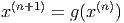 a diferença entre o valor exato de e sua representação de máquina, isto é, 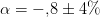. A sequência efetivamente calculada no computador é:
|
|
Qual o número de condicionamento desse problema?
Exemplo 2.7.2. Observe a seguinte identidade
, ,
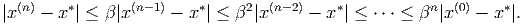, 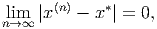 e 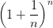. Observe que quando 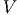 se aproxima
do 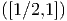 de máquina a expressão perde o significado. Veja a Figura 2.1 com o
gráfico de em escala logarítmica.
Exemplo 2.7.3. Neste exemplo, estamos interessados em compreender mais detalhadamente o comportamento da expressão
|
| (2.1) |
quando 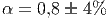 é um número grande ao computá-la em sistemas de numeral de ponto flutuante com acurácia finita. Um resultado bem conhecido do cálculo nos diz que o limite de (2.1) quando 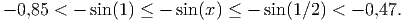 tende a infinito é o número de Euler:
|
| (2.2) |
Sabemos também que a sequência produzida por (2.1) é crescente, isto é:
No entanto, quando calculamos essa expressão no Scilab, nos defrontamos com o seguinte resultado:
![|---|------------------|----|----|------------------|
| | ( ) | | | ( ) |
| n | 1 + 1 n | | n | 1 + -1 n |
| | n | | | n |
|---|-----------------------------------------------|
| | | | | |
| 1 |2,0000000000000 | |102 |2,7048138294215 |
| | | | | |
| 2 |2,2500000000000 | |104 |2,7181459268249 |
| | | | | |
| 3 |2,3703703703704 | |106 |2,7182804690957 |
| | | | | |
| 4 |2,4414062500000 | |108 |2,7182817983391 |
| | | | 10| |
| 5 |2,4883200000000 | |10 |2,7182820532348 |
| | | | 12| |
| 6 |2,5216263717421 | |10 |2,7185234960372 |
| 7 |2,5464996970407 | |1014|2,7161100340870 |
| | | | | |
| 8 |2,5657845139503 | |1016|1,0000000000000 |
| | | | | |
| 9 |2,5811747917132 | |1018|1,0000000000000 |
| | | | 20| |
|10-|2,5937424601000---------10---1,0000000000000---|
| |](main627x.png)
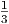
Observe que quando 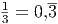 se torna grande, da ordem de 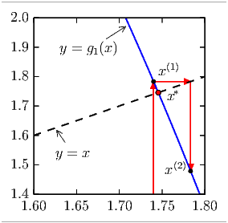, o gráfico da função deixa de se crescente e apresenta oscilações. Observe também que a expressão se torna identicamente igual a 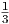 depois de um certo limiar. Tais fenômenos não são intrínsecos da função 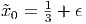, mas oriundas de erros de arredondamento, isto é, são resultados numéricos espúrios. A fim de pôr o comportamento numérico de tal expressão, apresentamos abaixo o gráfico da mesma função, porém restrito à região entre 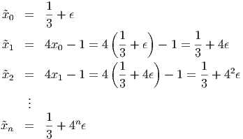 e 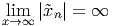.
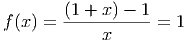 ¨
Para compreendermos melhor por que existe um limiar 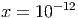 que, quando atingido torna a expressão do exemplo acima identicamente igual a 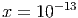, observamos a sequência de operações realizadas pelo computador:
|
| (2.3) |
Devido ao limite de precisão da representação de números em ponto flutuante, existe um menor número representável que é maior do que 1. Este número é 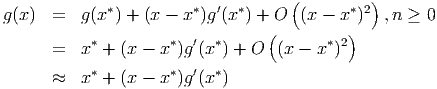eps, onde eps é chamado de épsilon de máquina e é o menor número que somado a 1 produz um resultado superior a 1 no sistema de numeração usado. O épsilon de máquina no sistema de numeração double vale aproximadamente 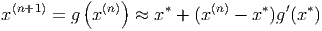. No Scilab, o epsilon de máquina é a constante eps. Observe que:
Quando somamos a 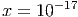 um número positivo inferior ao épsilon de máquina, obtemos o número 1. Dessa forma, o resultado obtido pela operação de ponto flutuante 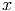 para 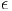 é 1.
Portanto, quando realizamos a sequência de operações dada em (2.3), toda
informação contida no número 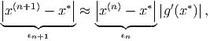 é perdida na soma com 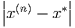 quando 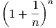 é
menor que o épsilon de máquina, o que ocorre quando 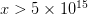. Assim
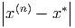 é aproximado para  e a última operação se resume a 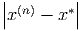, o que é
igual a 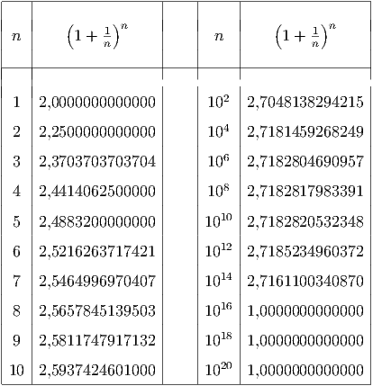 mesmo quando
e a última operação se resume a 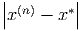, o que é
igual a 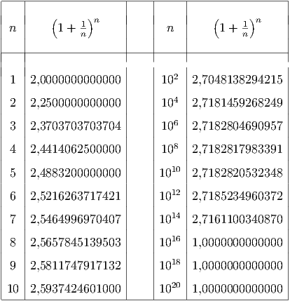 mesmo quando  é grande.
é grande.
Um erro comum é acreditar que o perda de significância se deve ao fato de 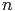 ser muito pequeno para ser representado e é aproximando para 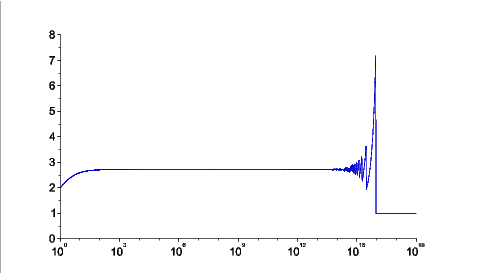. Isto é falso, o sistema de ponto de flutuante permite representar números de magnitude muito inferior ao épsilon de máquina. O problema surge da limitação no tamanho da mantissa. Observe como a seguinte sequência de operações não perde significância para números positivos x muito menores que o épsilon de máquina:
|
| (2.4) |
compare o desempenho numérico desta sequência de operações para valores pequenos de 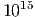 com o da seguinte sequência:
|
| (2.5) |
Finalmente, notamos que quando tentamos calcular para grande, existe perda de significância no cálculo de . Para entendermos isso melhor, vejamos o que acontece no Scilab quando :
Observe a perda de informação ao deslocar a mantissa de . Para evidenciar o fenômenos, observamos o que acontece quando tentamos recalcular subtraindo de e invertendo o resultado:
Exemplo 2.7.4 (Analogia da balança). Observe a seguinte comparação
interessante que pode ser feita para ilustrar os sistemas de numeração
com ponto fixo e flutuante: o sistema de ponto fixo é como uma balança
cujas marcas estão igualmente espaçadas; o sistema de ponto flutuante é
como uma balança cuja distância entre as marcas é proporcional à massa
medida. Assim, podemos ter uma balança de ponto fixo cujas marcas estão
sempre distanciadas de g ( g, g, g, ..., Kg, Kg,...)
e outra balança de ponto flutuante cujas marcas estão distanciadas sempre
de aproximadamente um décimo do valor lido (g, g, g, g,
..., Kg,
g, g, g, ..., Kg, Kg,...)
e outra balança de ponto flutuante cujas marcas estão distanciadas sempre
de aproximadamente um décimo do valor lido (g, g, g, g,
..., Kg,  Kg, Kg, ...) A balança de ponto fixo apresenta uma
resolução baixa para pequenas medidas, porém uma resolução alta para
grandes medidas. A balança de ponto flutuante distribui a resolução de forma
proporcional ao longo da escala.
Kg, Kg, ...) A balança de ponto fixo apresenta uma
resolução baixa para pequenas medidas, porém uma resolução alta para
grandes medidas. A balança de ponto flutuante distribui a resolução de forma
proporcional ao longo da escala.
Seguindo nesta analogia, o fenômeno de perda de significância pode ser
interpretado como a seguir: imagine que você deseje obter o peso de um
gato (aproximadamente Kg). Dois processos estão disponíveis: colocar o
gato diretamente na balança ou medir seu peso com o gato e, depois, sem
o gato. Na balança de ponto flutuante, a incerteza associada na medida do
peso do gato (sozinho) é aproximadamente  de Kg, isto é, g. Já
a incerteza associada à medida da uma pessoa (aproximadamente Kg)
com o gato é de do peso total, isto é, aproximadamente Kg. Esta
incerteza é da mesma ordem de grandeza da medida a ser realizada, tornado
o processo impossível de ser realizado, já que teríamos uma incerteza da
ordem de Kg (devido à dupla medição) sobre uma grandeza de Kg.
de Kg, isto é, g. Já
a incerteza associada à medida da uma pessoa (aproximadamente Kg)
com o gato é de do peso total, isto é, aproximadamente Kg. Esta
incerteza é da mesma ordem de grandeza da medida a ser realizada, tornado
o processo impossível de ser realizado, já que teríamos uma incerteza da
ordem de Kg (devido à dupla medição) sobre uma grandeza de Kg.
E 2.7.1. Considere as expressões:
|
|
e
|
|
com . Verifique que elas são idênticas como funções reais. Teste no computador cada uma delas para , e . Qual dessas expressões é mais adequada quando é um número pequeno? Por quê?
Resposta. Quando é pequeno, é um número grande. A primeira expressão produz um ”overflow” (número maior que o máximo representável) quando é pequeno. A segunda expressão, no entanto, reproduz o limite quando .
E 2.7.2. Encontre expressões alternativas para calcular o valor das seguintes funções quando é próximo de zero.
Resposta. a) ; b) ; c) ; d)
E 2.7.3. Use uma identidade trigonométrica adequada para mostrar que:
|
|
Analise o desempenho destas duas expressões no computador quando vale
,  , , , , e . Discuta o resultado. Dica:
Para , pode ser aproximada por com erro de
truncamento inferior a .
, , , , e . Discuta o resultado. Dica:
Para , pode ser aproximada por com erro de
truncamento inferior a .
E 2.7.4 (title=Notas do prof. Guidi). Reescreva as expressões:

E 2.7.5. Na teoria da relatividade restrita, a energia cinética de uma partícula e sua velocidade se relacionam pela seguinte fórmula:
|
|
onde é a energia cinética da partícula, é a massa de repouso, o módulo
da velocidade e a velocidade da luz no vácuo dada por .
Considere que a massa de repouso do elétron seja
conhecida com erro relativo de . Qual é o valor da energia e o erro relativo
associado a essa grandeza quando , ,  e
sendo que a incerteza relativa na medida da velocidade é
?
e
sendo que a incerteza relativa na medida da velocidade é
?
Resposta.  J; ; J; ; J; ;
J; .
J; ; J; ; J; ;
J; .
E 2.7.6. Deseja-se medir a concentração de dois diferentes oxidantes no ar. Três sensores eletroquímicos estão disponíveis para a medida e apresentam a seguintes respostas:
Resposta. Em ambos casos, temos a seguinte estrutura:
Usando derivação logarítmica, temos
E o erro associado às medidas pode ser aproximado por
onde não se indicou nem pois são todos positivos.
Fazemos agora a aplicação numérica:
Caso do par 1-2:
Caso do par 1-3:

Conclusão, apesar de o sensor apresentar uma incerteza cinco vezes maior na sensibilidade, a escolha do sensor para
fazer par ao sensor parece mais adequada.